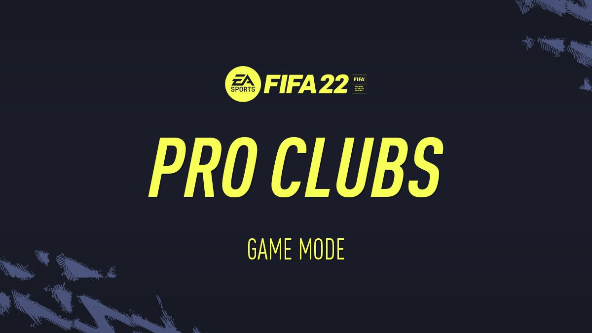
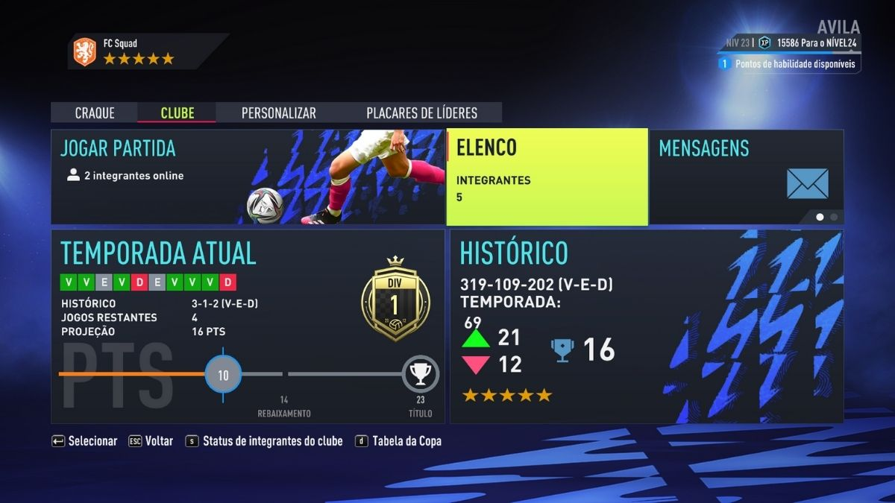
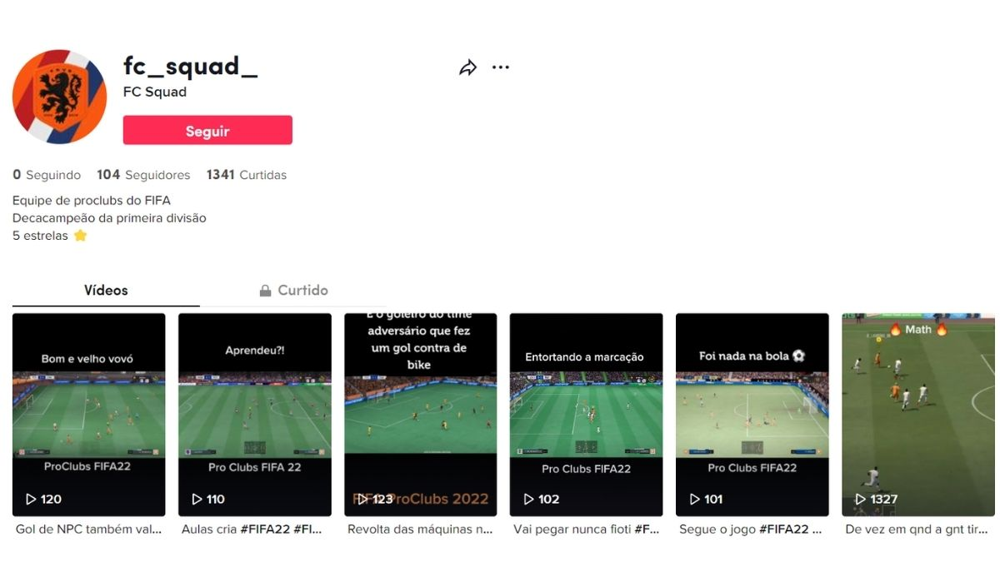

FC Squad
Descrição do projeto
O FC Squad é uma equipe de Proclubs do jogo FIFA, ela é composta por 4 membros: Pedavila(que sou eu), Matheus, Meoli e Dianiny. No momento a equipe é detentora de 5 titúlos da primeira diviasãono FIFA 22 e mais 5 dos FIFAs anteriores, totalizando 10 titulos.
O Pro Clubs é um modo social online do FIFA que permite a criação de Craque Virtual para jogar no campo com amigos e amigas.
Com tantos títulos e gols no currículo, criamos um TikTok para mostrar nossos feitos para o mundo. O projeto começou em 04/02/2022 e pretendemos manter a publicação de vídeos de acordo com a nossa disponibilidade.
Queremos também mostar e popularizar esse modo que é deixado de lado pela criadora do jogo Eletronic Arts, para que assim em jogos futoros o Proclubs seja visto com mais carinho dentro do FIFA.
Clicando no imagem abaixo você será direcionado para a página do Tiktok do FC Squad.
←Voltar ao Portfolio